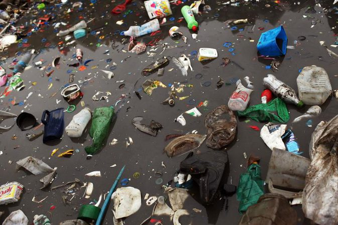
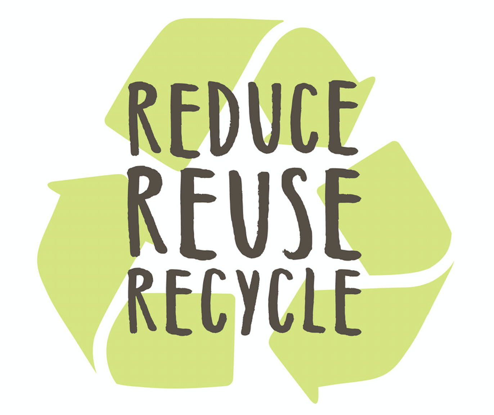
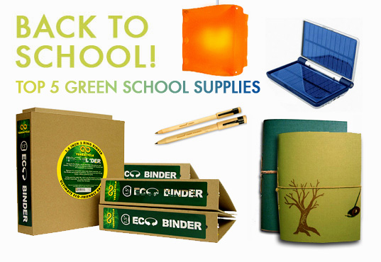
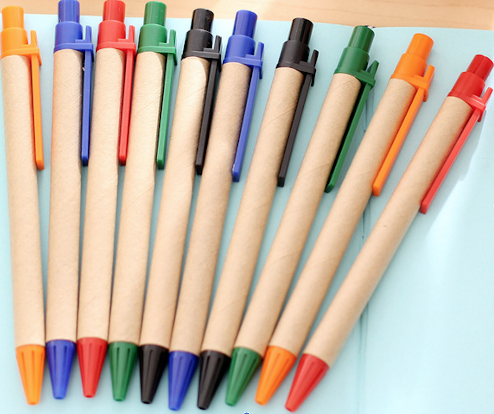
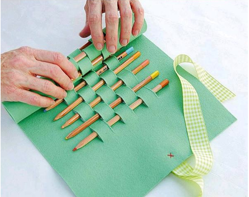
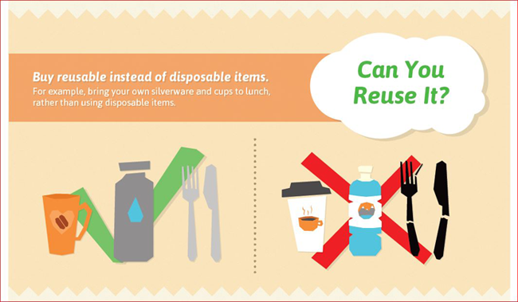

Saving the planet one craft at a time.
What is REUSING?
The most effective way to reduce waste is to not create it in the first place.
Making a new product requires a lot of materials and energy - raw materials must be
extracted from the earth, and the product must be fabricated then transported
to wherever it will be sold. As a result, reduction and reuse are the most effective ways
you can save natural resources, protect the environment and save money.
Why should I REUSE?
Reusing reduces the amount of waste that will need to be recycled
or sent to landfills and incinerators, prevents pollution, saves energy,
reduces greenhouse gas emissions that contribute to global
climate change, helps sustain the environment for future generations, and allows
products to be used to their fullest extent.
Don't have access to a nearby recycling bin?
Don't want to throw away a bag from your favorite store?
But there's no need to worry... You can CRAFT CYCLE!!!... It's simpler than you think!!
Landfills are overflowing,
and landfill waste contributes to
the production of methane,
too much methane in the atmosphere
leads to the greenhouse effect,
which is linked to global warming
and the depleting of many
of our natural resources.

Just find the item(s) you want to reuse and craft away!
WATER BOTTLES |
CANS |
CARDBOARD |
PENCIL STUBS |
MAGAZINES |
PILL BOTTLES |
TOILET PAPER |
WRAPPERS |
CHOPSTICKS |
TIRES |
MILK JUGS |
CLOTHING |
How you can help:
Think Green before you shop!

Purchase and use school supplies
made from recycled products, such as pencils made from
old blue jeans and binders made from old shipping boxes

Keep waste out of landfills by using school supplies
wrapped in minimal packaging, and buying in bulk when possible

Save packaging, colored paper, egg cartons and other
items for arts and crafts projects. Look for other ways that you can
reduce the amount of packing that you throw away

Buy reusable over disposable items and buy used goods.

DONATE: Instead of discarding unwanted appliances, tools or
clothes, try selling or donating them. Not only will you be reducing waste,
you'll be helping others. One person's trash is another person's treasure!

For more information on being an environmental steward, visit this link!